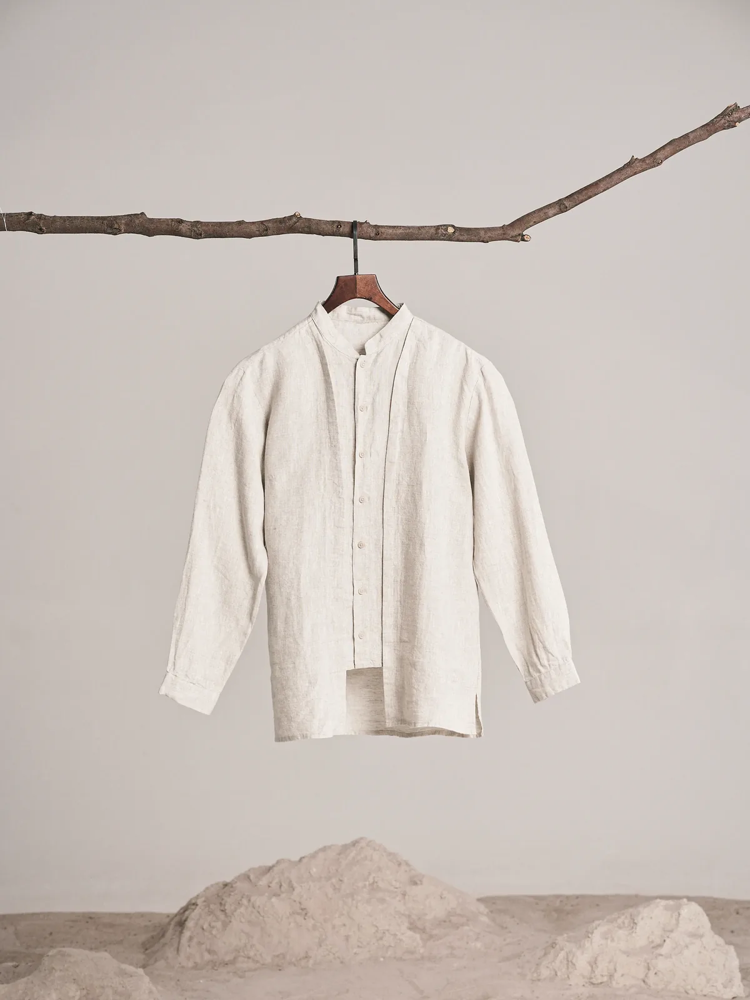
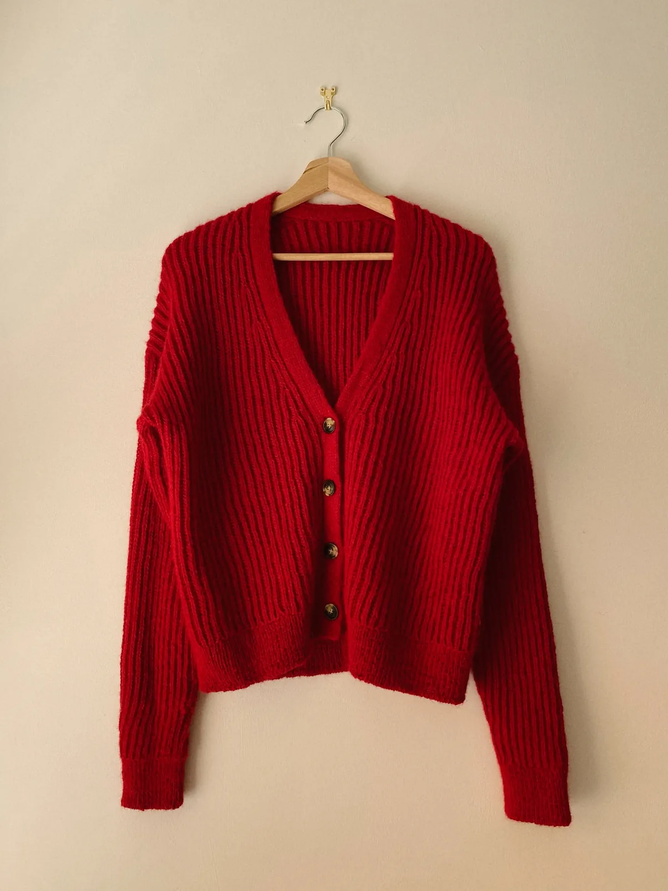

N.º 01 · Días de calor
Lino
Composición · 100% lino
Fresco y seco al tacto. La arruga natural es parte de su encanto.
Camisa mao de lino · Cruda
$58.900
Nueva temporada · Primavera
Vestidos, camisas, sastrería y tejidos a precios accesibles. Cada prenda trae su etiqueta: composición, tacto y cuidados.

Lino · 100% Camisa maoPor prenda
Vidriera
Composición exacta y tacto de cada prenda, antes de sumarla al carrito.
Cómo lavarla, secarla y plancharla, escrito en la ficha de cada prenda.
Pasanos tu busto, cintura y cadera y te decimos qué talle elegir.
Vestirsi con il cuore
Una prenda elegante se reconoce al tocarla. Acá la podés leer antes: la tela está en la etiqueta.
Buscamos que la calidad se note sin pagar de más. Por eso cada prenda muestra de qué está hecha, cómo se siente y cómo cuidarla, y el talle se resuelve con una consulta.
Conocé las cuatro telasGuía de telas
Lino, satén, punto inglés y crepe: cómo se siente cada una, en qué temperatura se disfruta y qué prenda la lleva.

N.º 01 · Días de calor
Composición · 100% lino
Fresco y seco al tacto. La arruga natural es parte de su encanto.
N.º 02 · Noches templadas
Composición · 100% poliéster
Brillo suave que no transparenta y cae con movimiento propio.
N.º 03 · Días fríos
Composición · 50% lana · 50% acrílico
Acanalado esponjoso que abriga sin pesar y vuelve a su forma.
N.º 04 · Entretiempo
Composición · 100% poliéster
Grano mate con estructura: no se arruga en todo el día.
Catálogo completo
Probá con otra tela u otro talle, o mirá la colección completa.
Antes de comprar
¿Te quedó otra duda? Escribinos por WhatsApp y te ayudamos a elegir.
Medí tu busto, cintura y cadera y buscalas en la tabla de talles. Si quedás entre dos, escribinos por WhatsApp con tus medidas y la prenda que te gustó y te decimos cuál elegir.
| Talle | Busto | Cintura | Cadera |
|---|---|---|---|
| S | 84–88 | 64–68 | 90–94 |
| M | 88–92 | 68–72 | 94–98 |
| L | 92–98 | 72–78 | 98–104 |
| XL | 98–104 | 78–84 | 104–110 |
Es el porcentaje de cada fibra que tiene la tela. Un 100% lino es fresco y se arruga con naturalidad; un 3% o 5% de elastano le suma elasticidad para que la prenda acompañe el movimiento.
El satén se lava a mano en agua fría y se plancha del revés a baja temperatura. El punto se seca en horizontal para que no se estire. Cada ficha trae los cuidados de esa prenda.
Elegí la prenda, el talle y la cantidad, y sumala al carrito. Desde el carrito podés finalizar la compra o mandarnos el pedido por WhatsApp para coordinarlo.
Vestirsi con il cuore
Mirá la composición, elegí tu talle y, si dudás, escribinos: te ayudamos a encontrar la prenda.
Se aplica al instante sobre esta misma demo.